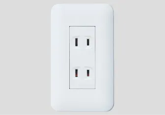
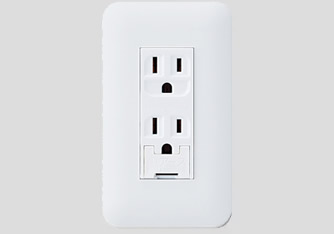
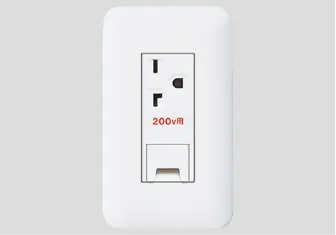
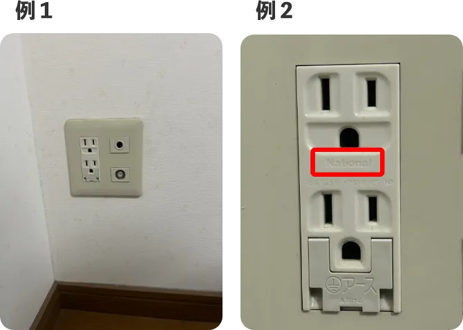

ジモデン登録の
電気工事店なら
コンセント交換が
1ヶ所 8,800円 （税込）

コンセント
部材代
Point! プロが解説 コンセント交換費用と
適正業者選びのポイント



コンセントの破損でお困りですか？
家のコンセントが
・破損した、焦げてしまった…
・プラグがすぐに抜けてしまう…
コンセントが破損・焦げた・プラグを挿してもすぐに抜ける時に知っておきたい
工事費用の相場や適切な業者の探し方、
ぼったくりを防ぐ方法を電気工事のプロが解説します。
- コンセントの交換費用は？
- 適切な業者の探し方
コンセント交換費用と 適正業者の探し方
コンセント交換とはどんな工事？
コンセントを新品へ取替える工事

- 破損・焦げたコンセントを新品へ取替える工事
- 電気工事士の資格が必要！DIYは危険
- プロにとっては簡単な電気工事
- 電気工事業者ならヒアリングや画像送付でコンセントの仕様を確認できれば、すぐに総額を出せます→オンライン見積もり可
かなりシンプルな工事ですが、無資格のDIYは電気工事士法に違反し、危険です。業者へ依頼する場合、『現地を確認しないと値段は出せない』
『5,000円～です』 などしか言わない電気工事業者は避けたほうが無。 プロはこのように回答します ⇒工賃〇〇円＋コンセント部材費。
コンセントの種類は多く、メーカーは複数ある

- コンセントのメーカーはパナソニックが圧倒的なシェア。東芝、神保製は普段扱わない電気工事業者が多く、時間を要することも
- コンセントの種類は２口、アース付き、200V用など種類は多い。伝えるのは難しいので画像を送ってプロに判断してもらいましょう
テレビ・電話・LANなどと同一プレート内のコンセントはメーカーを合わせないと取付けできません。
東芝や神保は電気工事業者が在庫を持っていることが少ないので、取替えには時間を要することもあります。
電気工事業者に依頼したらコンセント交換費用は？
部材代はどれくらい？
コンセント交換工事費用総額の適正価格
※住宅や店舗・事務所で使用されている一般的なもの
1ヵ所
6,600円～9,900円
（税込）
（工事費の総額。業者により基本料、出張費などの項目があります。）
コンセント部材費
（コンセント部材は400円～1,000円程）
駐車場代などの追加費用
（コインパーキング代をどちらが負担するかは業者により異なります。また、片道20km以上など遠方の場合は交通費がかかる可能性があります）
コンセント交換を業者へ依頼する場合は、事前にメールやLINEでの問い合わせに対応している業者へ画像を送り、見積りを出してもらうことをおすすめします。コンセント交換はそれくらい単純な電気工事です。
コンセント部材費はいくらくらい？
Costコンセントの部材費は形状により異なりますが、業務用機械等の大きなコンセントでなければ、部材費は400円～1,000円程です。
-

２口コンセント
最も一般的なコンセント。
コンセント部材費は400円程。 -

アース付コンセント
冷蔵庫・電子レンジ・洗濯機などのアース線のある家電製品用コンセント。
コンセント部材費は800円程。 -

200Vコンセント
大き目のエアコンに使われていコンセント
コンセント部材費は800円程。
どこへ・どのように頼めばよいのか？
では実際にコンセントの交換をしたい場合にどこに頼めば良いのでしょうか。
-
電気工事士の知り合いがいないけど、どこに頼めば良い?
-
いくらくらいかかる？
-
高額請求されないか？
電気工事２０年の経験から、コンセント交換の適正業者とはどんな業者か？を電気工事のプロの視点からお伝えします。
01. 電気工事業者
Expert大規模施設や住宅などの電気工事を行う事業者。 事務所や倉庫で営業しているため、近くで営業していてもほとんどの方は気付かないと思いますが、精度に加えスピードを求められる仕事をこなしているので本物のプロと言えますし、迅速に動いてもらえるでしょう。
１ヵ所6,600円～9,900円＋コンセント部品代
依頼方法電気工事業者のホームページにはコンセント交換費用を明確に記載していない場合が多いので、問い合わせページから画像を添付して工事費用を確認しましょう。
地元の電気工事店が登録されている
↓ジモデンなら費用が明確です↓
02. 街の電気屋
Electrianパナソニックのお店やアトムなどの家電販売と小規模電気工事を行うお店です。街の電気屋はしっかりと料金表があり、高額請求されることはありません。ただし、見積りのために来てもらうだけで出張費や見積料を請求される可能性があります。また、コンセント交換費用は相場より高めとなることが多いようです。それでも高額請求がない、対応が早い点でオススメです。
１ヵ所5,500円～8,800円＋部材費
依頼方法現地確認（見積り）をしてもらうだけで費用が発生する場合が多いため、不具合のあるコンセントを撮影してお店へ行き確認する。
03.インターネット
集客業者
Internet
くらしのマーケットやミツモアなどの集客業者です。
実際に工事を行うのは契約している電気工事店となります。
また、クチコミが掲載されているので安心感があります。
インターネット集客業者を通すと電気工事店に手数料が発生しますので、コンセント交換費用は割高となるでしょう。
また、集客業者の中には、3000円～などお値打ち感を打ち出して、実際には倍以上の費用を請求する業者もありますので注意して下さい。
１ヵ所5,500円～14,000円＋部材費
依頼方法金額が明確な【くらしのマーケット】又は、【ミツモア】から依頼する。その際、『現地確認後の見積り』としか言わずに目安の金額を教えてくれない業者や、『〇〇円～です』としか言わずに目安を教えてくれない業者は避けた方がよいでしょう。
コンセント交換を業者へ依頼する際のまとめ
コンセント交換費用の適正価格
Price
総額で１ヵ所の工事費6,600円～9,900円＋部材費
※工事費とは出張費や基本料など、部材費以外の全てを含んだ値段。総額をすぐに教えてくれる業者は適正業者です
※部材費は一般的なコンセントの場合400円～1,500円程
※業者により駐車代が必要なことも。
※コンセント部材は業者に用意してもらいましょう。
どこへ工事を頼めるのか？
To whom01. 地元の電気工事業者
-
地元の電気工事業者を【〇〇市 電気工事業者】などで検索
-
問い合わせページから画像を送り、工事費用を確認
※電気工事業者のホームページは料金の記載がない場合が多いので、問い合わせしづらい可能性があります。
地元の電気工事店が登録されている
↓ジモデンなら費用が明確です↓
02. 街の電気屋
-
パナソニックのお店などの街の電気屋さん
-
工事費用は少し高めだが、料金表があるので安心
-
現地確認→見積りだけで調査料などが発生するので、故障したコンセントの画像を持ってお店へ行き確認するのが良い。
03. インターネット集客業者
-
料金が明瞭なくらしのマーケット、ミツモアが安心
-
下記を記載している、または回答する業者には要注意！
- ・最短〇分で到着
- ・最安値
- ・3,300円～など相場より安い金額
どのように依頼をすればよいのか？
How toメールやLINEでの問い合わせに対応している業者へは、下記があれば回答できます。
-
・コンセントの画像を２枚

（少し離れて撮影で１枚、接近で１枚
※メーカー名が確認できるように） -
・補足事項
①画像で判断できないこと（通電していない、熱くなる、火花がでるなど）
②その他問い合わせ事項（値段を知りたいなど）